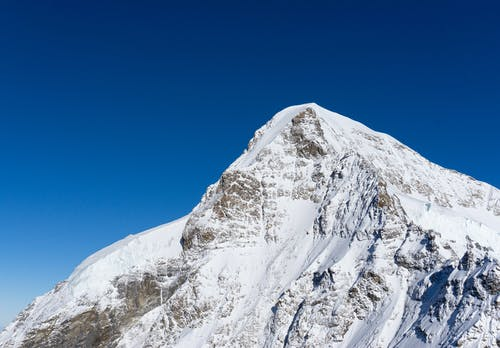

Urlaubsziele

Seilbahn bei Zermatt

Die Jungfrau(4158m über NN)
In den Schweizer Alpen gibt es einige sehenswerte Urlaubsziele, welche einen Ausflug wert sind.
Ein Klassiker ist das Mattertal, an dessen Ende Zermatt liegt. Von dort aus lassen sich viele Wanderungen unternehmen.
Auch kann man in die Seilbahn steigen, sich auf 3.883m hochfahren lassen, und das wunderschöne Gletscherpanorama bestaunen. Hier kann im Winter, sowie
auch im Sommer Skifahren gehen.
In der Stadt selber kann man teuer Essen gehen und die rustikalen Häuser ansehen. Die Stadt selbst ist von Täsch mit dem Zug erreichbar,
wo man auch sein Auto parken muss, da die Stadt selbst Autofrei ist.
Einen Ausflug wert ist auch das Berner Oberland. Hier kann man mit dem Zug von Lauterbrunnen auf das Jungfraujoch (3.466m über NN) hochfahren.
Hier kann man noch einen Abstecher in die Stadt Interlaken machen und sich am Brienzsee ausruhen.
Wenn man in Graubünden ist sollte man bei der Lenzerheide vorbeischauen. Dort gibt es neben einem wunderschönen Panorama auch ein großes Skigebiet. Sollte man im
Sommer dort sein kann man in dem großen Bikepark Mountainbike fahren oder Wandern gehen.